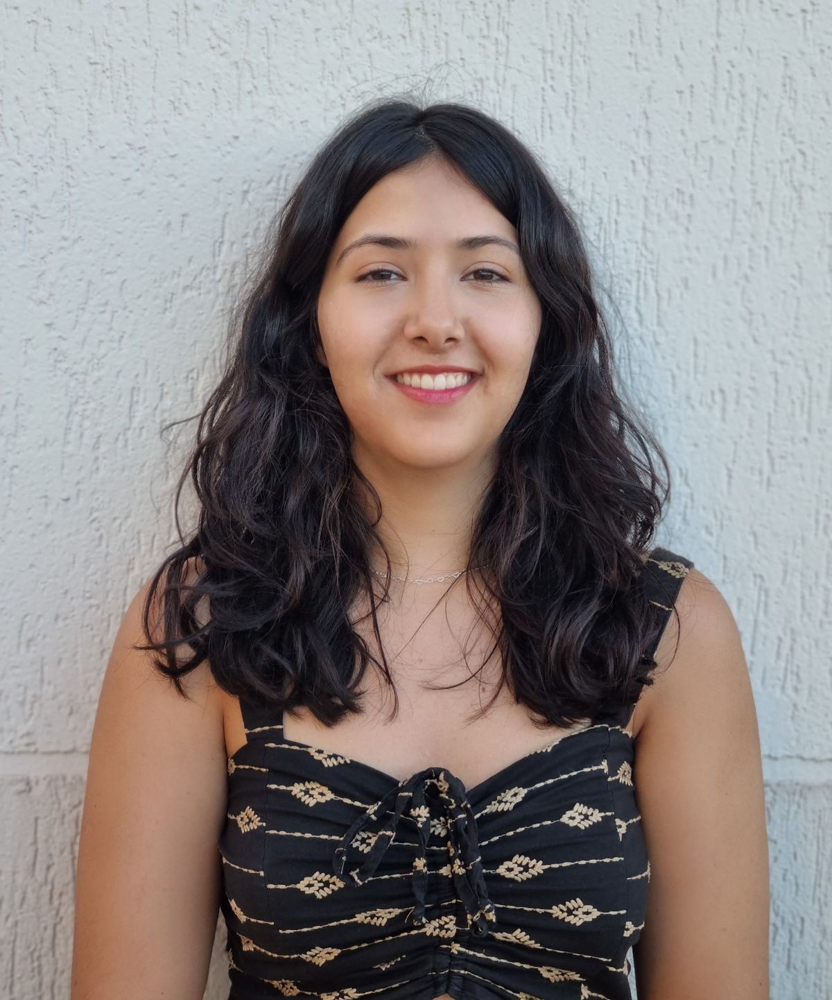

MINHAS ESPECIALIDADES.
Website
Desenvolvimento web utilizando ferramentas como HTML, CSS, Javascript, Bootstrap, .NET e muitas outras!
Linguagens de Programação
Conhecimento inicante em linguagens de programação Java, Python, php e SQL.
GitHub e GitLab
Experiência em ferramentas de versionamento de código.

MUITO PRAZER, SOU SARA ROSADO.
Olá, me chamo Sara e sou estudante do curso de Sistemas de Informação na Universidade Federal de Uberlândia. Desde o inicio da minha vida acadêmica acredito que a tecnologia e os softwares têm a capacidade de impulsionar mudanças e melhorias na sociedade como um todo, facilitando e auxiliando os indivíduos no seu cotidiano.
Como prova disso, durante o curso, tive a oportunidade de me envolver em projetos acadêmicos e desenvolvi, em colaboração com minha equipe, o sistema web "EncontraPets", criado para ajudar pets perdidos a reencontrar seus tutores. Esse trabalho foi extremamente importante para mim, pois me permitiu unir duas das minhas paixões: a tecnologia e a possibilidade de ajudar os animais.
Acredito que minha vontade de aprender, junto com a base teórica que adquiri na faculdade, pode ser útil para ajudar a desenvolver projetos inovadores. Além disso, também será uma chance incrível para crescer e me desenvolver como parte do mundo tech!